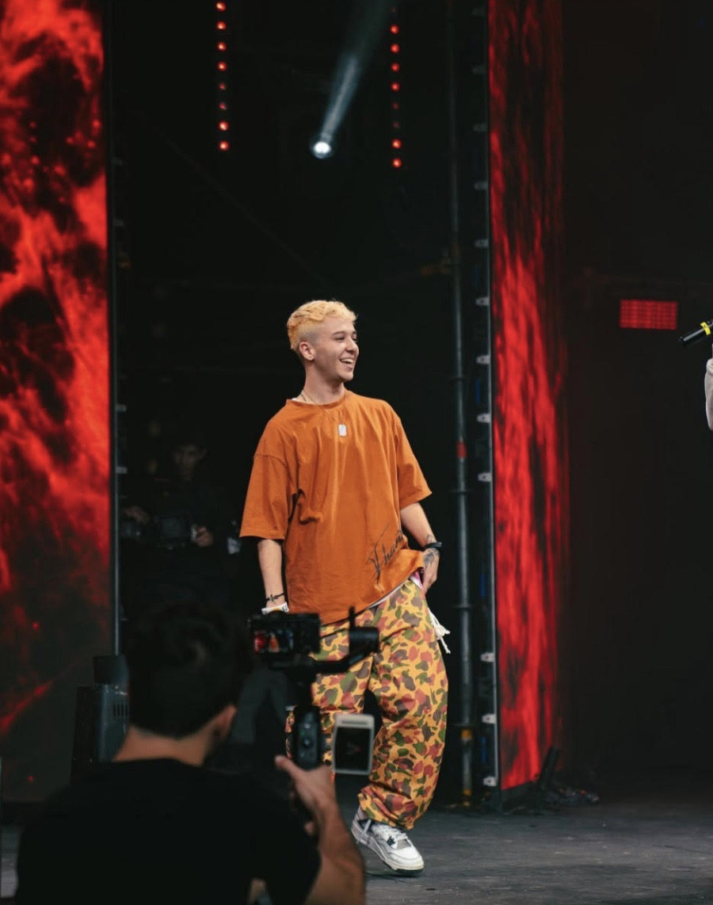

Sobre Feca Klaus
Fotografía
Figura 1: Feca Klaus en un evento.
Entrevista
- ¿Qué te motivó a compartir tu historia como chico trans en un ámbito tan competitivo como los esports?
“En un principio tenía miedo del rechazo, pero luego entendí que al visibilizar mi historia podía ayudar a otros chicos trans a sentirse menos solos. Los esports son mi pasión, pero también quería demostrar que podemos estar en cualquier lugar, siendo quienes realmente somos.”
- ¿Cómo ha influido tu transición en tu desarrollo profesional y personal como creador de contenido?
- ¿Qué rol crees que juega la comunidad gamer en la inclusión y diversidad hoy en día?
“Ha sido un camino lleno de desafíos, especialmente al principio. En eventos, muchas veces no me tomaban en serio, pero también me ayudó a desarrollar una piel más dura y a entender el impacto que mi voz puede tener para otros. Mi autenticidad es ahora mi mayor fortaleza.”
“Creo que hay un potencial increíble en la comunidad gamer. Aunque aún queda mucho por hacer, he visto cómo los gamers se unen para apoyar causas sociales. Es un espacio que necesita más educación y apertura, pero confío en que vamos por buen camino.”
Contacto
Puedes saber más sobre Feca Klaus visitando su sitio web oficial o siguiéndolo en Instagram.